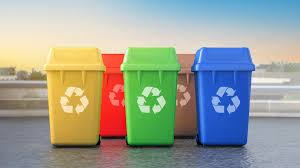
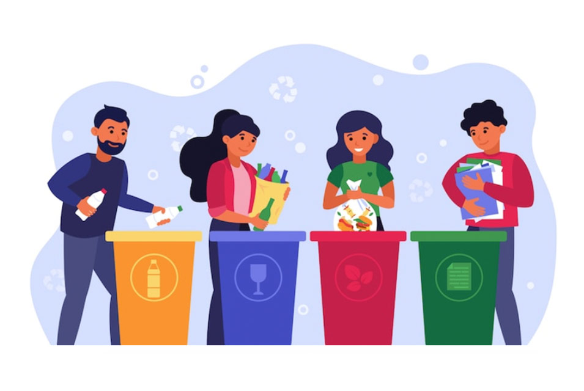

Clasificación de Colores
En España, el sistema de recogida selectiva utiliza distintos colores para facilitar la separación
de residuos. Esta clasificación permite que los materiales puedan reciclarse correctamente y
reducir la cantidad de basura que termina en vertederos.
-
Contenedor Amarillo: envases de plástico, latas y briks. Aquí se incluyen botellas,
bandejas de plástico, latas de refresco, aerosoles vacíos y envases metálicos ligeros.
-
Contenedor Azul: papel y cartón. Se depositan cajas, periódicos, revistas,
envases de cartón y folletos. No deben tirarse papeles sucios o plastificados.
-
Contenedor Verde: vidrio. Exclusivamente botellas, frascos y tarros de vidrio.
No se incluyen cerámica, espejos ni bombillas.
-
Contenedor Marrón: materia orgánica. Restos de comida, cáscaras, posos de café,
servilletas usadas y pequeños restos vegetales.
-
Contenedor Gris: resto. Todo aquello que no puede reciclarse en los contenedores
anteriores, como pañales, colillas, polvo de barrer o residuos mixtos.
El ciclo de vida de los residuos
Una vez que los residuos salen de casa, comienzan un recorrido que depende del tipo de material
y del sistema de gestión municipal. En general, el proceso incluye:
-
Recogida selectiva: los camiones especializados vacían los contenedores y llevan
los residuos a plantas de tratamiento.
-
Clasificación: en las plantas de selección, los materiales se separan mediante
cintas transportadoras, imanes, sistemas ópticos y personal especializado.
-
Tratamiento: cada material sigue un proceso distinto. El plástico se tritura y
funde para crear pellets; el vidrio se limpia y se funde para fabricar nuevos envases; el papel
se mezcla con agua para obtener pasta reciclada.
-
Valorización: los residuos orgánicos pueden transformarse en compost o biogás,
mientras que los residuos no reciclables pueden destinarse a valorización energética.
-
Vertedero: solo una parte residual acaba en vertederos controlados, donde se
aplican medidas para minimizar su impacto ambiental.
Este ciclo permite recuperar materiales, ahorrar energía y reducir la extracción de recursos
naturales, contribuyendo a una economía más circular.
Consejos Prácticos
-
Lava los envases antes de tirarlos: no es necesario dejarlos impecables, pero
eliminar restos de comida evita malos olores y mejora el proceso de reciclaje.
-
Aplasta latas, botellas y cajas: así ocupan menos espacio en el contenedor y
facilitan su transporte.
-
Retira tapones y tapas: aunque también se reciclan, es mejor separarlos para
que las máquinas los identifiquen correctamente.
-
No mezcles residuos peligrosos: pilas, medicamentos, aceites y aparatos
electrónicos deben llevarse a puntos limpios o contenedores específicos.
-
Reduce antes de reciclar: reutilizar envases, comprar a granel y evitar
productos de un solo uso disminuye la cantidad de residuos generados.


← Volver al Inicio